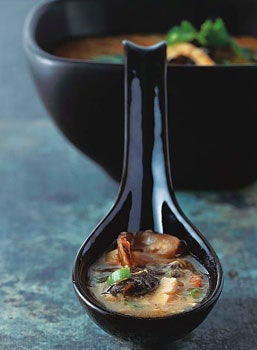

Chinese Hot-and-Sour Soup

A Chinese Soup Spoon, full of Chinese Hot and Sour Soup.
This authentic soup is essentially an ancient doctor's curative that combines the healing magic of chicken broth, the circulation-enhancing qualities of tree fungus and lily buds, and the antiseptic properties of vinegar. The heat isn't from chiles — it's actually from freshly ground white pepper.
Ingredients
- 5 ounces boneless pork loin, cut into 1/4-inch-thick strips (2/3 cup)
- 2 teaspoons dark soy sauce
- 4 small Chinese dried black mushrooms
- 12 small dried tree ear mushrooms
- 1 1/2 tablespoons cornstarch
- 12 dried lily buds (sometimes called golden needles)
- 1/2 cup canned sliced bamboo shoots, cut lengthwise into 1/8-inch-wide strips (from an 8-oz can)
- 2 tablespoons red-wine vinegar
- 2 tablespoons rice vinegar (not seasoned)
- 1 tablespoon light soy sauce
- 1 1/2 teaspoons sugar
- 1 teaspoon kosher salt
- 2 tablespoons peanut oil
- 4 cups reduced-sodium chicken broth
- 3 to 4 oz firm tofu (about a quarter of a block), rinsed and drained, then cut into 1/4-inch-thick strips
- 2 large eggs
- 2 teaspoons Asian sesame oil
- 1 1/2 teaspoons freshly ground white pepper
- 2 tablespoons thinly sliced scallion greens
- 2 tablespoons fresh whole cilantro leaves
Directions
- Toss pork with dark soy sauce in a bowl until pork is well coated.
- Soak black and tree ear mushrooms in 3 cups boiling-hot water in another bowl (water should cover mushrooms), turning over black mushrooms occasionally, until softened, about 30 minutes. (Tree ears will expand significantly.) Cut out and discard stems from black mushrooms, then squeeze excess liquid from caps into bowl and thinly slice caps. Remove tree ears from bowl, reserving liquid, and trim off any hard nubs. If large, cut tree ears into bite-size pieces. Stir together 1/4 cup mushroom-soaking liquid (discard remainder) with cornstarch in a small bowl and set aside.
- Meanwhile, soak lily buds in about 1 cup warm water until softened, about 20 minutes, then drain. Trim off tough tips of lily buds. Cut lily buds in half crosswise, then tear each half lengthwise into 2 or 3 shreds.
- Cover bamboo shoots with cold water by 2 inches in a small saucepan, then bring just to a boil (to remove bitterness) and drain in a sieve.
- Stir together vinegars, light soy sauce, sugar, and salt in another small bowl.
- Heat a wok over high heat until a bead of water vaporizes within 1 to 2 seconds of contact. Pour peanut oil down side of wok, then swirl oil, tilting wok to coat sides. Add pork and stir-fry until meat just changes color, about 1 minute, then add black mushrooms, tree ears, lily buds, and bamboo shoots and stir-fry 1 minute.
- Add broth and bring to a boil, then add tofu. Return to a boil and add vinegar mixture. Stir cornstarch mixture, then add to broth and return to a boil, stirring. (Liquid will thicken.) Reduce heat to moderate and simmer 1 minute.
- Beat eggs with a fork and add a few drops of sesame oil. Add eggs to soup in a thin stream, stirring slowly in one direction with a spoon. Stir in white pepper, then drizzle in remaining sesame oil and divide among 6 to 8 bowls. Sprinkle with scallions and cilantro before serving.